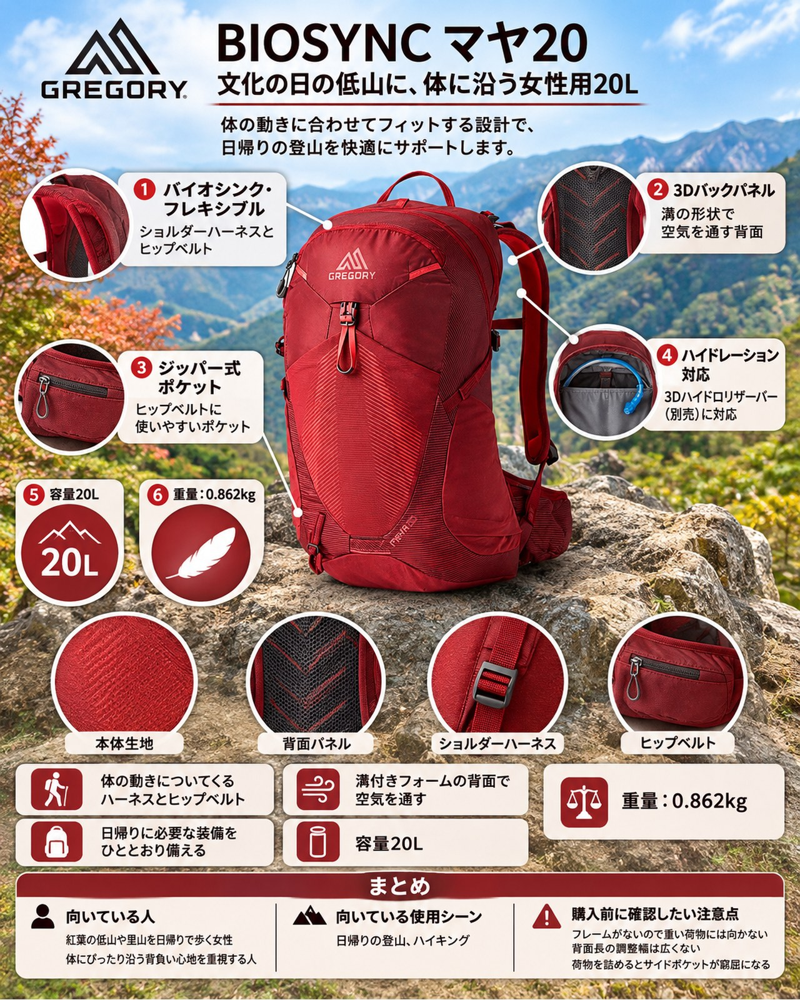

11月3日の文化の日は、太平洋側で晴れの予報です。近郊の低山では紅葉が色づき始め、日帰りで歩くにはよい時期になりました。一方で、晩秋は山頂や休憩中に体が冷えやすく、日帰りでも防寒着と雨具は持っておきたい季節です。荷物は小屋泊ほど多くないけれど、体に合わないザックで肩や腰が疲れるのは避けたい。そんな女性のハイカーに向くのが、グレゴリーのウィメンズ日帰りザック「BIOSYNC マヤ20」です。体の動きに合わせて伸縮するバイオシンク・サスペンションを採用した、容量20Lのモデルです。
基本スペック
※仕様・価格は2026年11月2日時点のグレゴリー公式オンラインストアの表示です（掲載色はアイリスレッド）。
| 項目 | 内容 |
|---|---|
| 商品名 | BIOSYNC マヤ20 |
| 商品コード | GR-145279（SKU：28J*60029） |
| 対象 | ウィメンズ |
| 容量 | 20L |
| 重量 | 0.862kg |
| 寸法 | 48.9 × 28.0 × 22.9cm |
| 素材 | ナイロン100% |
| サイズ | One size（トルソー約89mm調節可能） |
| 価格 | 24,200円（税込） |
体の動きについてくるハーネスとヒップベルト
ショルダーハーネスとヒップベルトは「バイオシンク・フレキシブル」仕様で、体の動きに合わせて伸縮します。使った人の声では、2023年に刷新されたこのシリーズ（同じシリーズの男性用ミコ20）について、体に密着しながら動きについてくる背負い心地だとされています。幅広めのショルダーストラップは体格の大きい人にも合いやすいという声もあります。岩や木の根をまたぐ低山の登り下りでも、ザックが体から離れにくい作りです。
溝付きフォームの背面で空気を通す
背面パネルは通気孔フォームの3Dバックパネルで、溝の形状で空気を通す設計です。ショルダーハーネスにも通気孔付きのパッドが使われています。使った人の声では、通気性を非常に良いとする意見と「まずまず」とする意見があり、評価は分かれています。メッシュを張ったタイプほどの通気性は期待しすぎないほうがよさそうです。
手元で使えるポケットが多い
ヒップベルトにはジッパー式のポケットがあり、携帯電話などが入る大きさです。両サイドにはストレッチメッシュのポケットがあり、使った人の声では1Lのボトルを固定できるとされています。外側のポケットは合計6つで、内部の貴重品用ポケットも旧モデルより大きくなったという紹介もあります。行動食や地図、スマートフォンをザックを下ろさずに出し入れしやすい構成です。
日帰りに必要な装備をひととおり備える
独立したハイドレーションポケットは3Dハイドロリザーバー（別売）に対応します。トレッキングポール用の調節可能なバンジーループと反射式のループ、反射式のライトアタッチメントループやギアループもあります。日没が早い晩秋に、下山が遅れたときの備えにもなります。ジッパーの引き手は成形されたコンフォートグリップで、手袋をしたままでも扱いやすいという声があります。
デメリット・注意点
- フレームがないので重い荷物には向かない：使った人の声では、荷物はおよそ7kg（約15ポンド）までなら快適で、それを超えると快適さが落ちるとされています。
- 背面長の調整幅は広くない：トルソーの調節幅は約89mmです。旧モデル（約13cm）より調整幅が狭くなり、体格によっては合わない可能性があります。購入前に店頭で背負って確かめるのがおすすめです。
- 荷物を詰めるとサイドポケットが窮屈になる：中身を詰め込みすぎると、サイドポケットに1Lボトルが入りにくくなるという声があります。
- 内側のメッシュポケットは小さめ：内側のメッシュポケットはあまり大きくないという声があります。
- レインカバーは付属しない：レインカバーの記載はありません。雨の予報が出ている日は別途ザックカバーを用意しましょう。
向いている人・向いていない人
◎向いている人
- 紅葉の低山や里山を日帰りで歩く女性
- 体にぴったり沿う背負い心地を重視する人
- ヒップベルトのポケットでスマートフォンや行動食を手元に置きたい人
- 下山が遅れたときに備えて、ライトを付けられるループがほしい人
△向いていない人
- 水や防寒着をたくさん持ち、荷物が7kgを超えそうな人
- 背中の蒸れ対策で、メッシュ背面のザックを求める人
- 小柄・大柄などで、背面長を細かく合わせたい人
まとめ
グレゴリーの「BIOSYNC マヤ20」は、体の動きに合わせて伸縮するハーネスとヒップベルト、手元で使えるポケットの多さが特徴のウィメンズ日帰りザックです。フレームがないため重い荷物には向かず、背面長の調整幅も広くはありませんが、防寒着と雨具、行動食を入れて低山を日帰りで歩くなら扱いやすい容量です。文化の日の晴れ間に、紅葉の低山へ出かける相棒として検討してみてはいかがでしょうか。
この記事で紹介した商品
価格・重量・在庫は各ブランド公式サイトの記載（確認日つき）にもとづきます。商品を押すと、購入先を選べます。
この記事にはアフィリエイト広告が含まれます。リンク先での購入により、当サイトが報酬を受け取る場合があります。山行の前には、最新の気象とルートの状況を必ずご確認ください。